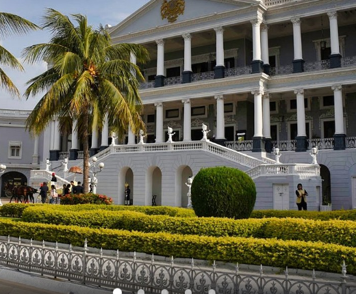
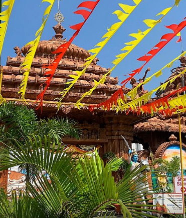
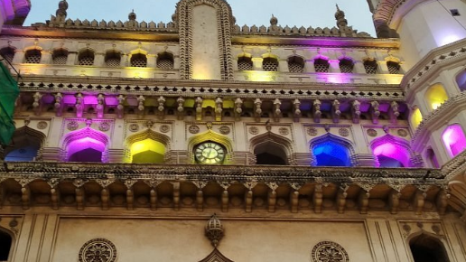

Places To Visit In Hyderabad
falaknama palace
golconda fort
jaganath temple
charminar
Falaknama Palace

Falaknuma is a palace in Hyderabad, Telangana, India.[3][4] It originally belonged to the Paigah family, and was later owned by the Nizam of Hyderabad.[5] It is on a hillock and covers a 13-hectare (32-acre) area in Falaknuma, 5 kilometres (3.1 mi) from Charminar.
Built by Nawab Sir Viqar-ul-Umra, Prime Minister of Hyderabad and the uncle & brother-in-law of the sixth Nizam. Falak-numa means "Like the Sky" or "Mirror of Sky" in Urdu.
Golconda fort

Golconda is a fortified citadel and ruined city located in the western outskirts of Hyderabad, Telangana, India.[1][2] The fort was originally built by Kakatiya ruler Pratāparudra in the 11th century out of mud walls.[3] It was ceded to the Bahmani Kings by Deo Rai, Rajah of Warangal during the reign of Sultan Muhammad Shah (1358–1375 A.D.) of the Bahmani Sultanate.[3] Following the death of Sultan Mahmood Shah, the Sultanate disintegrated and Sultan Quli, who had been appointed as the Governor of Hyderabad by the Bahmani Kings, fortified city and made it the capital of the Golconda Sultanate. Because of the vicinity of diamond mines, especially Kollur Mine, Golconda flourished as a trade centre of large diamonds known as Golconda Diamonds. Golconda fort is currently abandoned and in ruins. The complex was put by UNESCO on its "tentative list" to become a World Heritage Site in 2014, with others in the region, under the name Monuments and Forts of the Deccan Sultanate (despite there being a number of different sultanates).[
Jaganath temple

The Jagannath Temple is an important Hindu temple dedicated to Jagannath, a form of Vishnu – one of the trinity of supreme divinity in Hinduism. Puri is in the state of Odisha, on the eastern coast of India. King Indradyumna of Avanti has built the main temple of Jagannath at Puri.[1] The present temple was rebuilt from the tenth 10th century onwards, on the site of pre-existing temples in the compound but not the main Jagannatha temple, and begun by Anantavarman Chodaganga, the first king of the Eastern Ganga dynasty.[2] many rumours are spread about the temple but there is no solid proof of it.[3] The temple is one of the 108 Abhimana Kshethram of Vaishnavate tradition.
The Puri temple is famous for its annual Ratha Yatra, or chariot festival, in which the three principal deities are pulled on huge and elaborately decorated temple cars, Worship is performed by the Bhil Sawar tribal priests as well as priests of other communities in the Jagannath temple.[4] Unlike the stone and metal icons found in most Hindu temples, the image of Jagannath is made of wood and is ceremoniously replaced every twelve or 19 years by an exact replica.[5] It is one of the Char Dham pilgrimage sites.The puri temple is also famous because many legends believe that Krishna’s heart was placed there and the material that it is made from damages the heart so they have to change it every twelve years.
charminar

The Charminar (lit. 'four minarets') is a monument located in Hyderabad, Telangana, India. Constructed in 1591, the landmark is a symbol of Hyderabad and officially incorporated in the emblem of Telangana.[3] The Charminar's long history includes the existence of a mosque on its top floor for more than 425 years. While both historically and religiously significant, it is also known for its popular and busy local markets surrounding the structure, and has become one of the most frequented tourist attractions in Hyderabad. Charminar is also a site of numerous festival celebrations, such as Eid-ul-adha and Eid al-Fitr,[4] as it is adjacent to the city's main mosque, the Makkah Masjid.
The Charminar is situated on the east bank of Musi River.[5] To the west lies the Laad Bazaar, and to the southwest lies the richly ornamented granite Makkah Masjid.[6] It is listed as an archaeological and architectural treasure on the official list of monuments prepared by the Archaeological Survey of India.[7] The English name is a translation and combination of the Urdu words chār and minar or meenar, translating to "Four Pillars"; the eponymous towers are ornate minarets attached and supported by four grand arches.